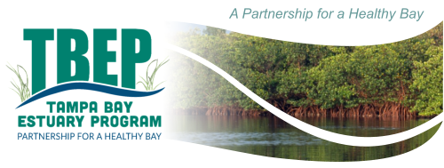

Tampa Bay Estuary Program (TBEP) GitHub Website

Site build 2025-11-23
Want to contribute to this page? Create an issue here.
Repositories
github.com/tbep-tech: GitHub organization
 tbep-tech.github.io: files for this GitHub website
tbep-tech.github.io: files for this GitHub website data-management-sop: TBEP data management SOP
data-management-sop: TBEP data management SOP tbep-refs: Comprehensive bibliography of TBEP publications, formatted here
tbep-refs: Comprehensive bibliography of TBEP publications, formatted here tbeptools: R package with utility functions for reading, analyzing, and visualizing TBEP data. See the vignette for details on of the package.
tbeptools: R package with utility functions for reading, analyzing, and visualizing TBEP data. See the vignette for details on of the package. tbeploads: R package for calculating load estimates to Tampa Bay. See the vignette for details on the package.
tbeploads: R package for calculating load estimates to Tampa Bay. See the vignette for details on the package. wqtrends: R package to assess water quality trends for long-term monitoring data in estuaries using Generalized Additive Models. See the vignette for details on the package.
wqtrends: R package to assess water quality trends for long-term monitoring data in estuaries using Generalized Additive Models. See the vignette for details on the package. slrcsap: R package to create projections of sea level rise for the Tampa Bay region recommended by the Climate Science Advisory Panel. See the vignette for details on the package.
slrcsap: R package to create projections of sea level rise for the Tampa Bay region recommended by the Climate Science Advisory Panel. See the vignette for details on the package. peptools: R package with utility functions for reading, anlayzing, and visualizing Suffolk County monitoring data for the Peconic Estuary Program. See the vignette for details on the package.
peptools: R package with utility functions for reading, anlayzing, and visualizing Suffolk County monitoring data for the Peconic Estuary Program. See the vignette for details on the package. github-backup: Repository used to create an archive of all repositories in the tbep-tech GitHub organization page and upload to Amazon S3 services on a weekly basis.
github-backup: Repository used to create an archive of all repositories in the tbep-tech GitHub organization page and upload to Amazon S3 services on a weekly basis.
Reporting
- Water Quality Report Card:
- Tidal Creek Report Card
- Tampa Bay Nekton Index
- Seagrass Transect Training Data Dashboard
- Seagrass Transect Dashboard
- Tampa Bay Benthic Index
- Fecal Indicator Bacteria Dashboard
- Tampa Bay Watershed Land Use
- ANEP congressional districts
- Equity Plan Mapping
- Tampa Bay Valuation Dashboard
- Old Tampa Bay Temperature Loggers
- TBNMC Annual Compliance Assessments
- Piney Point Environmental Monitoring Dashboard
- Piney Point Data Analysis
- Repository for analyzing Piney Point data (source)
- Ft. DeSota Buoy Data, Pinellas County
 Data management and reporting repository, RESTORE project (source)
Data management and reporting repository, RESTORE project (source)
- Seagrass Transect Water Atlas Content
 Graphics, tables, and downloads for seagrass transect data (source)
Graphics, tables, and downloads for seagrass transect data (source)
- TBERF Oyster Restoration Project
- Scallop Search
- Verified WBIDs
- Load Estimates
Presentations
ANEP Tech Transfer Workshop
- What is Open Science and Why Should the NEPs Care?, Oct. 29th, 2020: link
Bay-Delta IEP Data Science PWT
- Bringing open science to Tampa Bay: Reproducible workflows & dynamic documents, Feb. 11th, 2021: link
Board meetings
Feb. 2020, 2019 water quality report card update: Management Board, Policy Board
Nov. 2021, Piney Point Manuscript Update: link
Feb. 2022, water quality report card and state of the bay update: link
Feb. 2023, water quality report card and state of the bay update (MB): link
Feb. 2023, water quality report card and state of the bay update (PB): link
Feb. 2024, water quality report card and state of the bay update (MB): link
Feb. 2024, water quality report card and state of the bay update (PB): link
Feb. 2025, water quality report card and state of the bay update (MB): link
Feb. 2025, water quality report card and state of the bay update (PB): link
CAC meetings
- Jan. 2025, water quality report card and state of the bay update: link
CERF Seagrass CoP May 2021
- Providing interactive web access to long-term seagrass monitoring data with open science data analysis tools: link
EPA N-STEPS Webinar Oct 2022
- Better nutrient management through open science: A collection of tales from California and Florida: link
Habitat Restoration Consortium
- May 2020, HMPU workflow, updating, and web products: Reproducible tools for tracking progress: link
Joint Aquatic Sciences Meetings 2022
- How the Tampa Bay Estuary Program Uses Open Science to Work Smarter, Not Harder, May 16th, 2022: link
National Water Quality Monitoring Conference 2023
- Using Open Science to Address Current and Future Threats to the Health of Tampa Bay, April 27th, 2023: link
NERRS Ecosystem Metabolism Webinar Aug 2020
- Methods and tools to measure ecosystem metabolism: link
NMC meetings
2022 seagrass and water quality report results: link
2022 provisional water quality report card: link
2023 provisional water quality report card: link
2024 provisional water quality report card: link
2025 provisional water quality report card: link
Hydrology and chlorophyll trends in Tampa Bay: Alternative modelling approaches: link
Old Tampa Bay Working Group
- Jun 2020, Seagrass changes in OTB: Recent shifts and links to water quality: link
Open Science Subcommittee
Kickoff webinar, March 2nd, 2020: link
Water Quality Dashboard review summary, May 6th, 2020: link
OS updates, Oct 27th, 2020: link
OS updates, Feb 2nd, 2021: link
OS updates, May 4th, 2021: link
OS updates, Aug 3rd, 2021: link
OS updates, Feb 1st, 2022: link
OS updates, May 3rd, 2022: link
OS updates, Aug 2nd, 2022: link
OS updates, Nov 1st, 2022: link
OS updates, May 3rd, 2023: link
OS updates, Aug 2nd, 2023: link
OS updates, Nov 1st, 2023: link
OS updates, May 23rd, 2024: link
OS updates, Dec 10th, 2024: link
OS updates, May 28th, 2025: link
Open Science Workshop Sep 2019
PEP Monitoring Collaborative Oct 2020
Piney Point
Pints of Science Oct 2023
- Science for the Masses: Using Open Science for Better Decisions to Restore and Protect Tampa Bay: link
SBEP TAC meeting Feb 2020
- Open Science Data Discussion: Red Tide Impact and Response Assessment for Tampa and Sarasota Bay Region: link
SWFL RAMP Meeting Jul 2020
- Open Science at TBEP: Tidal Tributaries Example: link
SWFL Seagrass Working Group
- Tampa Bay Seagrass Changes: Exploring Trends from 2018 to 2020, Nov. 16, 2021: link
TAC meetings
Jan 2020, Open Science Indicator Products: Water Quality and Tidal Tributaries: link
Jun 2020, Tampa Bay Nekton Index: Open Science Integration: link
Mar 2021, Open Science Indicator Products: Seagrass transect data and dashboard: link
Jan 2022, RSPARROW Tools for End Users, Project Overview and Demo: link
Jun 2022, Macroalgae trends in Tampa Bay: What we do(n’t) know: link
Oct 2022, Revised Critical Coastal Habitat Assessment methodology: link
Oct 2023, Hot and fresh: Pervasive climate stressors of seagrass in Tampa Bay: link
Jan 2024, water quality report card and state of the bay update: link
Jan 2025, water quality report card and state of the bay update: link
USF Department of Integrative Biology
- Piney Point, red tide, and Twitter: A Tampa Bay story, March 30th, 2023: link
USF College of Marine Science
- How you can do better science in less time: Open science lessons from the Ocean Health Index to Tampa Bay, March 5th, 2021: link
Virtual Summit Jul 2020
- Bringing Open Science to Tampa Bay: Reproducible Workflows and Dynamic Documents: link
Resources
TBEP Trainings
- Florida AFS open science workshop
- TBEP open science workshop
- CERF open science workshop
- CERF R training
- CERF Shiny workshop
- PEP R training, recording
- NERRS ecocystem metabolism
- TBEP R training, recordings
- Writing functions in R
- R package development workflow
- A soft introduction to Shiny
- Rookery Bay R training (incomplete)
R Lessons & Tutorials
- DSOS/AEMON-J Hacking Limnology 2022, supporting open science workshops
- Software Carpentry: R for Reproducible Scientific Analysis
- Data Carpentry: Geospatial Workshop
- Data Carpentry: R for Data Analysis and Visualization of Ecological Data
- Data Carpentry: Data Organization in Spreadsheets
- Reproducible Reporting with R (R\(^3\)) for Marine Ecological Indicators
- R for Water Resources Data Science
- RStudio Webinars, many topics
- R For Cats: Basic introduction site, with cats!
- Topical cheatsheets from Posit, also viewed from the help menu
- Cheatsheet from CRAN of base R functions
- Totally awesome R-related artwork by Allison Horst
- Color reference PDF with text names, Color cheatsheet PDF from NCEAS
R eBooks/Courses
- Jenny Bryan’s Stat545.com
- Garrett Grolemund and Hadley Wickham’s R For Data Science
- Chester Ismay and Albert Y. Kim’s Modern DiveR
- Julia Silge and David Robinson Text Mining with R
- Hadley Wickham’s Advanced R
- Hadley Wickham’s R for Data Science
- Hadley Wickham’s R for Data Science, 2nd edition
- Hadley Wickham’s Mastering Shiny
- Yihui Xie R Markdown: The Definitive Guide
- Winston Chang R Graphics Cookbook
- Wegman et al. Remote Sensing and GIS for Ecologists: Using Open Source Software
- Lovelace et al. Geocomputation with R
- Edszer Pebesma and Roger Bivand Spatial Data Science